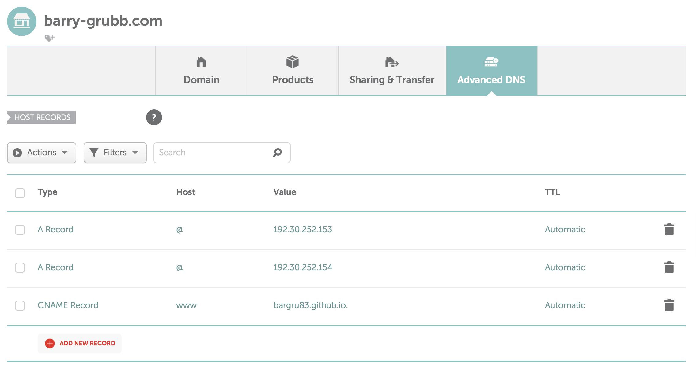
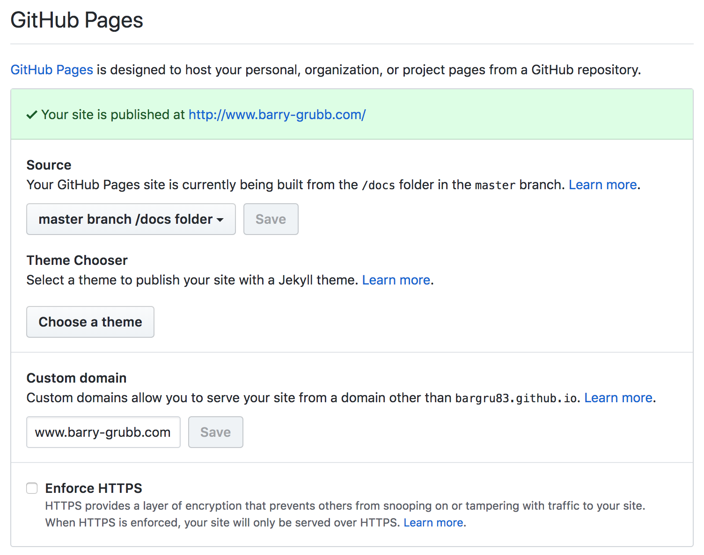

The problem I wanted to solve
I've rebuilt my blog a few times in the past, until now always using popular blogging tools. My first couple of blogs were built on self-hosted Wordpress installations. That was nice but it soon became clear that it was too much for my requirements. Wordpress is a large CMS (Content Management System) and I only ever used a small subset of its features. It also requires hosting on a server with a database (which costs money) and needs to be kept up to date regularly with security patches. The security part was important because my Wordpress sites were targeted by hackers almost every day.
When I came to build another blog, static site generators were becoming popular. This idea seemed much more suited to my use case. With a static site generator blog posts could simply be written in markdown, converted to static HTML, CSS and JavaScript and hosted cheaply without the need for a back end or a database. Aside from the cost saving, having no back send means there's nothing for hackers to target too! I built a blog using a popular Ruby-based generator called Jekyll, which made getting things up and running really simple. However, over time, even Jekyll seemed like more than I really needed for my basic blogging requirements.
The solution
When I came to build the blog that you're reading now I knew that a static site generator would still be the best fit for my needs, so I figured, why not just build a basic one myself? It's simpler than it sounds, is totally customizable and serves my purposes perfectly. This blog post explains how I did it. I won't go into code-level detail here for the sake of brevity, but if you're interested you can read my heavily commented code here (check out build.js).
Building the generator
The directory structure for the project looks like this:
- /docs (the output directory where the final site will be written to)
- /lib (any helper files required by the build script)
- /media (images)
- /posts (blog posts that I write in markdown format)
- /static (pages which don't rely on blog posts, the about page for example)
- /templates (HTML templates that the post content will be inserted in to)
- build.js (the build script, this is what makes the magic happen)
I write my blog posts in markdown and add to the top of each post an area called frontmatter (I stole that from all of the good static site generators). The frontmatter section is basically just a JSON string containing properties about that post, for example, its title, date, an array of tags, and whether it's in a draft state or not. I end the frontmatter section with a very specific predetermined string so that I have an easy way to recognize the end of the front matter from the start of the post content.
Once I've written a blog post I run the build script (which I've added as a script to my npm package.json so that I can simply run npm run build), which does the following:
- Check if there is already an output (docs) directory full of content from the previous time I ran this build script. If there is delete it. We'll rebuild the entire output directory each time the script is run to make sure that no stale files remain in there.
- Check if there are any markdown post in the posts folder. If not then our work here is done, go grab a coffee.
- If any markdown posts are found, for each post:
- Separate the front matter from the post content.
- Take the JSON content from the front matter and Parse it into usable data.
- Check whether the front matter contains a
"draft": "true"value. If it does then this post isn't ready to be published, so skip it. - For any post that isn't in a draft state, pass the post content to Showdownjs, an npm package that converts markdown files to HTML.
- Fetch the post template file. This is just an HTML file that I've built and styled, and which contains specific placeholder strings for the post's title, date, tags and content.
- Using a simple
String.replace()call, replace the placeholder string in the template with the converted HTML of the post's content. Also build HTML elements for the post's title, tags and date, and replace the relevant placeholder strings in the template with those too. Then write out the final post as a new HTML file. - While the posts are being processed keep a record of any tags encountered, and which posts use each tag.
- Once all of the posts have been processed, use the data we've been keeping about the tags to perform a similar process to the above. This time load another HTML template file specifically for the tags pages and replace the placeholder content in that page with a page title and a series of links to all posts using that tag. Write out each completed HTML tag page (creating one new page per tag).
- Now load up another HTML template for the index page, replace the placeholder strings with a series of links to the posts (in reverse chronological order) and write out the completed HTML index file.
- Copy any CSS files, media and static files to the output directory.
The process is pretty basic. After the posts are converted to HTML the majority of the work is in creating HTML elements, replacing strings with them and writing out HTML files. However, the result is a perfect fit for my needs, a basic, quick to load static site that I have total control over.
Considerations
- In an earlier version of the build script, the tags page was built as a single page that used JavaScript to change the list of posts as you clicked through the tags. However, after some research, I decided that I wanted to build my blog so that it would run perfectly for people who have JavaScript disabled in their browsers. From my research, it seems that a not insignificant number of people, especially those in the technical community (my target audience) run their browsers without JavaScript enabled. To remove the dependency on JavaScript I had to rework the tags page so that it now builds a separate static tag page for every tag used across the blog. The result is less elegant than I wanted, but importantly more accessible.
- Another thing to mention is that my blog is currently styled using only vanilla CSS. If necessary I could integrate a CSS preprocessor into the build process, but right now basic CSS is all I need. The key is that I'm flexible to move in any direction I want to in the future.
- The blog doesn't currently contain comments. That's not a limitation of the blog, I could easily integrate Disqus comments or similar, it's just a personal choice not to right now. I've had comments enabled on previous blogs and 99% of the comments I ever received were spam/ads/weirdos. It's not worth the effort unless I start getting some serious traffic.
- A final consideration is that right now I haven't managed to integrate syntax highlighting within the
code blocksthat are generated by Showdownjs. This is something I'm still looking into as I think it's a useful feature for readers. Showdownjs does allow for the use of custom plugins within the conversion process, I'll just have to dig in and see what I can do with that.
Hosting
I host the blog on GitHub Pages. The beauty of this is that (apart from the fact that it offers free hosting) GitHub Pages can be configured to deploy straight from the docs directory (which is why I named my output directory 'docs'). This means that in practice all I have to do once I've written or updated a blog post is run npm run build to build the site locally. Then I commit my changes to the master branch, push to GitHub and my site will deploy itself. Pretty sweet. With this process, the blog will be accessible via https://bargru83.github.io. (a URL based on my GitHub username). To use a custom URL instead of this is a fairly simple process, but it will differ depending on your domain registrar, so it's worth Googling 'GitHub Pages Custom Domain
- Set up the A Records from your domain registrar to point to the GitHub Pages servers. This will tell your domain registrar that any requests to that URL should be routed to GitHub's servers.
- Set up a CNAME record with your domain registrar to tell it that your custom domain is now an alias of the GitHub URL.
Below is a screenshot of my domain's settings with my registrar, Namecheap.

Setting up the A Records and CNAME with my domain registrar.
There's also a small amount of set up to do on GitHub's side. We need to tell GitHub which directory to deploy from (docs in this case) and the custom URL. My GitHub Pages settings are shown below.

My blog's settings within GitHub pages.
The last thing to do to enable the custom domain is to create a file in the root of the GitHub project called CNAME with the content set to be only the custom URL, in my case www.barry-grubb.com. After a couple of hours (allow up to 48 hours propagation time) the blog will now be accessible via your custom URL, in my case http://barry-grubb.com. Job done. Well almost…
What about HTTPS?
You might have noticed that my blog is now accessible via http://www.barry-grubb.com. HTTP, not HTTPS. However serving content via HTTPS rather than HTTP is preferable for several reasons, and my blog currently can't do that. If at this stage I try to visit https://www.barry-grubb.com (note the https this time) Chrome will give a big red warning that the site might not be safe. Other browsers can be expected to behave in a similar way, and that's a perfect way to scare away visitors. It's also expected that Google will prefer sites served over HTTPS in its search results going forward.
GitHub Pages does provide the ability to serve content over HTTPS, but only if you're using their own GitHub Pages URL (the bargru83.github.io formatted one) to do that. Because I'm using a custom domain I'm out of luck here. People have been complaining about this issue for at least 4 years and it still hasn't been rectified by GitHub, so I doubt that'll change any time soon.
Thankfully there's another option. We can use a free service called CloudFlare to help us out. CloudFlare is first and foremost a CDN (Content Delivery Network). The idea is that instead of pointing my custom URL directly at GitHub Pages where the content is hosted, I instead point it to CloudFlare, who will take care of delivering the blog content for me. The first time a visitor hits my URL CloudFlare fetches the content from GitHub and delivers it to the visitor. The key is that CloudFlare also keeps a cached copy of this content, which it then copies to hundreds of servers that it owns across the world. The next time somebody visits the same URL (within a set time window, by default 4 hours) CloudFlare will deliver the cached version from whichever of their servers is geographically closest to that visitor, rather than fetching it from the original server again. This results in the content loading quicker for the visitor because it's likely served from a closer location to them (unless they happen to live right near the GitHub server). The first visitor to visit the URL outside of that 4-hour window will get up-to-date content from our original server again, which is then cached for another 4 hours, and on and on.
Having this kind of CDN serving my blog is useful for the speed reasons mentioned above, but it also offers a fix for my HTTPS problem. When serving the content via CloudFlare I can choose to serve all HTTP requests via HTTPS instead.
To do this I opened an account with CloudFlare and was immediately greeted by a wizard that walked me through the process of setting up my site. The only manual step required from me was to visit my domain registrar and switch the 2 default nameservers for my domain to values that CloudFlare provided me with. I was told to wait up to 24 hours for the changes to take effect but in my instance, the changes only took a few minutes to go live. I could confirm this by attempting to visit my blog with both HTTP and HTTPS, both of which now worked. However, we probably don't want visitors to use the HTTP version of our site at all, because Chrome will still warn (albeit with a much less obtrusive warning than before) that this site still isn't completely secure. To fix this, on the dashboard within CloudFlare I navigated to the crypto tab and toggled on the 'Always use HTTPS' setting. This setting can take up to 48 hours to take effect (again it only took a few minutes for me), and the result is that anybody visiting the site with the HTTP protocol will be redirected to HTTPS.
Update (04.07.18)
Just over a month after I wrote this post GitHub finally enabled HTTPS for custom domains. Further to this when you now choose to switch to HTTPS GitHub also uses a CDN to deliver your content. This update appears to make Cloudflare almost redundant in my setup. While this is true on the surface, and it would be a simpler setup to have everything configured through GitHub, I'm intending to stay with the above GitHub/Cloudflare setup for the time being, due to the following reasons:
- Currently there doesn't appear to be any way for me to interface with GitHub's CDN settings. Conversely Cloudflare allows me to see and configure a great deal about my CDN setup. Cloudflare also allows me to control the CDN cache, and invalidate it whenever I need to.
- Cloudflare offers a huge boost in security, my helping to mitigate DDoS attacks, and offering protection against bots and scrapers. GitHub hosting doesn't currently appear to offer anything like that.
- The downtime that would result in routing my traffic away from Cloudflare and back to GitHub. It's not a big deal, but needless downtime nonetheless.